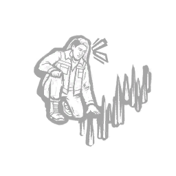
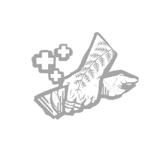
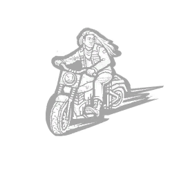

沙恩·威格瓦斯 Shane Wiigwaas
- 性别
- Man
- 出身
- Native American
- 演员
- Dallas Goldtooth (Actor)
背景故事
肖恩·"吉威维加巴"·维瓜斯在成长过程中渐渐明白，"正义"对不同的人而言有着不同的含义。对大多数人来说，"正义"就是"惩罚"的同义词。做错了事，就被送进监狱，事情到此结束。但对玻璃河第一民族的阿尼希纳贝克人来说，对龟岛上各族人民而言，"正义"意味着"平衡"。做错了事，就尽你所能去弥补。为了重塑平衡。
这一信条定义了他作为辩护律师的职业生涯——在法庭上为第一民族的当事人发声。在一个哪怕轻罪也会将罪犯送进监狱的体系里，肖恩成了一股扰流的力量；通过给予每个案件应有的重视与关注，他让许多当事人免于白白服刑。
但一切都被一个案子改变了。
德里克是肖恩众多表亲中最小的一个，也是他小时候相处最多的那个。他们一起长大，甚至一起闯过祸。但德里克始终温厚善良，是他母亲的心头宝。如今，他却身陷牢房，被控谋杀一名警察。
肖恩毫不犹豫地接下了这个案子，倾听德里克讲述他那一侧的经过。那只是一次再普通不过的交通拦查。德里克的尾灯坏了。那名警官却将事态升级，最终把德里克从车里拽了出来，拖进了路边的沟渠。就在德里克出于自卫而反击时，那名警察突然消失在一片黑雾之中。
肖恩知道他的表兄是清白的，但他需要的，是证——
专属技能

交叉审问
Cross-Examination

施以援手
Lend a Hand

全速推进
Wide Open Throttle
通用技能 任意逃生者均可使用
寻宝专家
Artefact Hunter
执念之缚
Bound by Obsession
黑暗感知
Dark Sense
坚持到底
Down to the Last
似曾相识
Déjà Vu
希望
Hope
同族
Kindred
最后站立
Last Standing
轻装上阵
Lightweight
不抛弃任何人
No One Left Behind
过度自信
Overconfidence
掠夺者直觉
Plunderer's Instinct
预兆
Premonition
韧性
Resilience
滑溜之躯
Slippery Meat
小猎手
Small Game
背脊发凉
Spine Chill
这不是真的
This Is Not Happening
硬跑者
Tough Runner
我们能行
We'll Make It
求生意志
Will to Live
附加品
- 暂无数据。